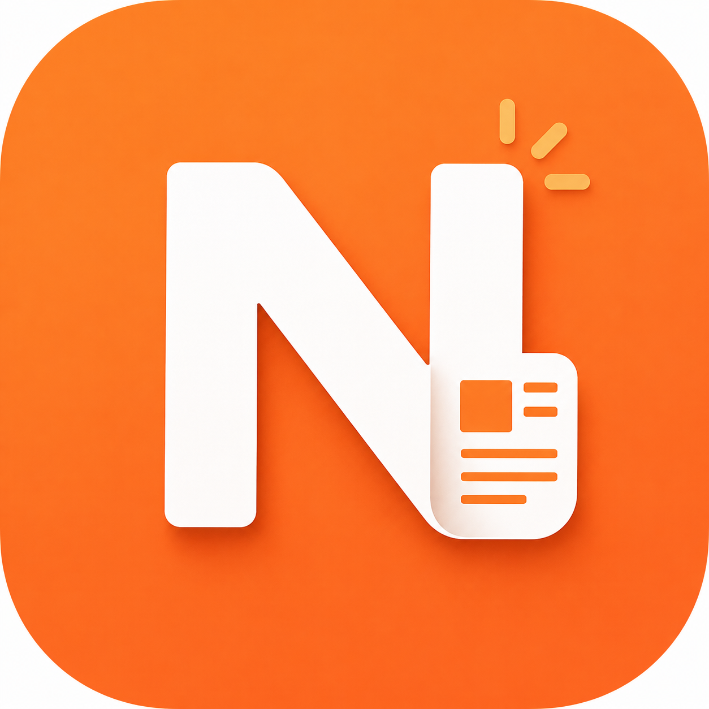

오늘의 뉴스를 정리 중이에요
잠시만 기다리면 오늘의 핵심을 정리해드릴게요.
-
주요 뉴스 수집 0/12 매체
-
AI 요약 생성 0/8 기사

AI가 오늘의 뉴스를 골라 짧게 요약하고 퀴즈로 정리해요.
맞춤 설정
선택한 분야를 중심으로 요약, 퀴즈, 데일리 리포트를 준비할게요.
Home
AI가 관심 분야의 주요 뉴스를 정리하고 있어요.
잠시만 기다리면 오늘의 핵심을 정리해드릴게요.
오픈AI와 앤트로픽이 잇따라 에이전트 기능을 공개하며 단순 대화를 넘어 업무 자동화 시장에 진입하고 있어요. 이메일 작성, 코드 실행, 파일 관리 등 실제 작업을 AI가 직접 처리하는 서비스가 빠르게 확산되고 있습니다.
미국이 주요 교역국에 상호관세를 부과하면서 국내 수출 기업들의 원가 부담이 커지고 있어요. 반도체·자동차·배터리 업종을 중심으로 대응책 마련이 시급하다는 목소리가 나오고 있습니다.
통계청이 발표한 지난해 합계출산율이 0.75명으로 역대 최저를 기록했어요. 정부는 저출생·고령화 문제를 국가 위기로 규정하고 전담 부처 신설 등 구조적 대응에 나섰습니다.
핵심만 보기
오픈AI와 앤트로픽이 AI 에이전트 기능을 공개하며 단순 대화를 넘어 실제 업무 처리로 영역을 넓히고 있어요.
이메일 작성, 코드 실행, 웹 탐색 등 사용자 대신 작업을 수행하는 자율 에이전트 서비스가 빠르게 확산되고 있습니다.
국내 IT 기업들도 에이전트 연동 서비스 개발에 속도를 내며 시장 선점 경쟁에 뛰어들고 있어요.
왜 중요해?
AI가 단순히 답변을 생성하는 단계를 넘어, 실제 작업을 대신 처리하는 방향으로 진화하고 있어요. 업무 자동화가 일상화되면 일하는 방식 자체가 바뀔 수 있습니다.
조금 더 알기
읽은 내용 확인하기
기사 핵심을 가볍게 체크해볼게요.기사에서 두 회사가 에이전트 기능을 공개하며 자동화 시장에 진입하고 있다고 설명했어요.
화요일 · 데일리 리포트
AI 자동화와 통상 압박, 인구 위기가 동시에 부상한 하루였습니다.
이메일 작성, 코드 실행, 파일 관리 등 실제 작업을 AI가 직접 처리하는 서비스가 빠르게 확산되고 있어요.
4개 매체가 동시에 보도AI 어시스턴트
기사·리포트 검색
뉴스가 궁금하면 물어보세요
수집된 기사와 리포트를 바탕으로
답변해 드릴게요.